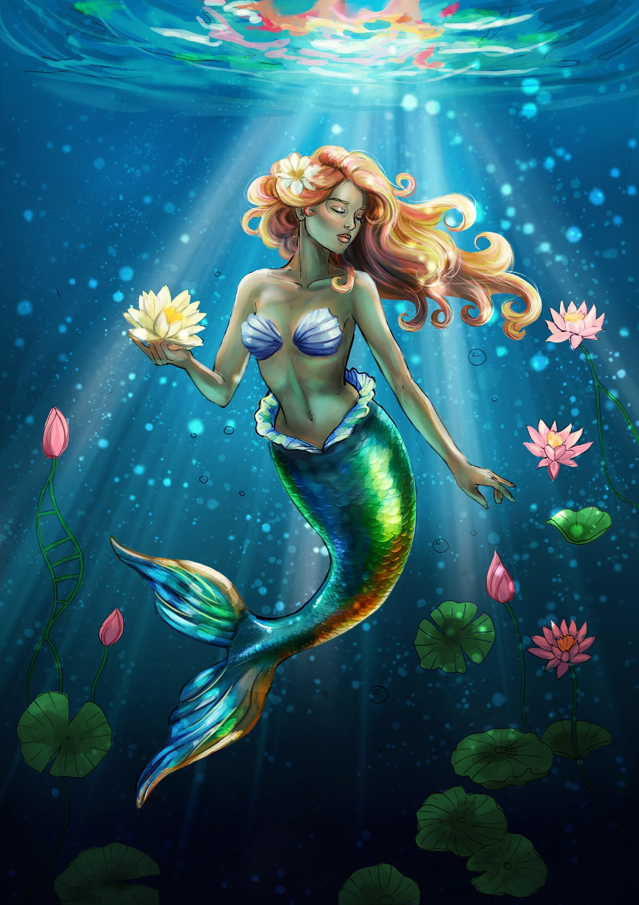

🧜 Кто такая русалка?
Русалка — одно из самых известных мифических существ. Обычно её изображают как девушку с длинными волосами и рыбьим хвостом вместо ног. Легенды о русалках существуют уже много веков. Одни истории рассказывают, что они добрые и помогают морякам, другие говорят, что русалки очень опасны и могут заманивать корабли своим красивым пением.
🌊 Где живёт?
Русалки живут в морях, океанах, глубоких озёрах и реках. Они любят подводные пещеры, коралловые рифы и места, где вода очень чистая. Иногда русалки поднимаются на поверхность ночью, чтобы посмотреть на звёзды или посидеть на больших камнях возле берега.
✨ Способности
- 🌊 Очень быстро плавает.
- 🎵 Поёт волшебным голосом.
- 🐠 Разговаривает с рыбами и дельфинами.
- 💎 Находит затонувшие сокровища.
- 🫧 Может долго находиться под водой.
- 🌙 Иногда использует морскую магию.
- 🦀 Управляет некоторыми морскими существами.
🎨 Внешний вид
- 👩 Верхняя часть тела похожа на человека.
- 🐟 Вместо ног — длинный рыбий хвост.
- 🧜 Длинные красивые волосы.
- ✨ Хвост покрыт блестящей чешуёй.
- 💙 Глаза часто голубые или зелёные.
📜 История
Легенды о русалках появились тысячи лет назад. Их можно встретить в мифологии многих народов мира. В некоторых странах русалок считали духами воды, а в других — волшебными существами, которые охраняют моря и озёра.
📖 Интересные факты
- 🌍 Легенды о русалках существуют почти во всех странах.
- 🐚 Символами русалки считаются жемчуг и морские раковины.
- 🎬 Русалки встречаются во многих фильмах, мультфильмах и играх.
- 🌊 Они считаются хранительницами морей.
- ⭐ Во многих сказках русалки помогают людям.
💡 Заключение
Русалка — одно из самых красивых мифических существ. Несмотря на то что её существование не подтверждено, легенды о русалках продолжают вдохновлять писателей, художников, режиссёров и создателей игр. Она символизирует тайны моря, красоту природы и волшебство.